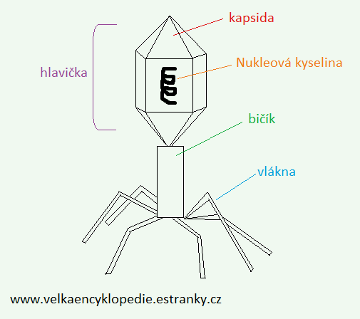
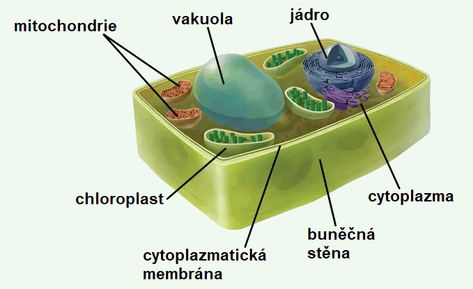
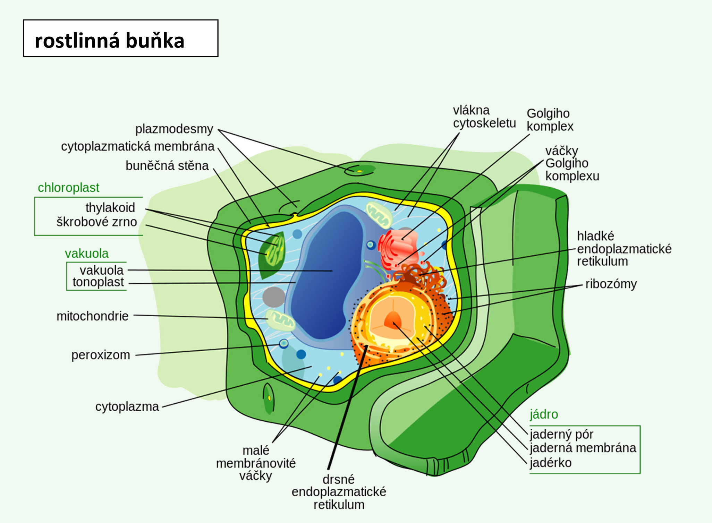
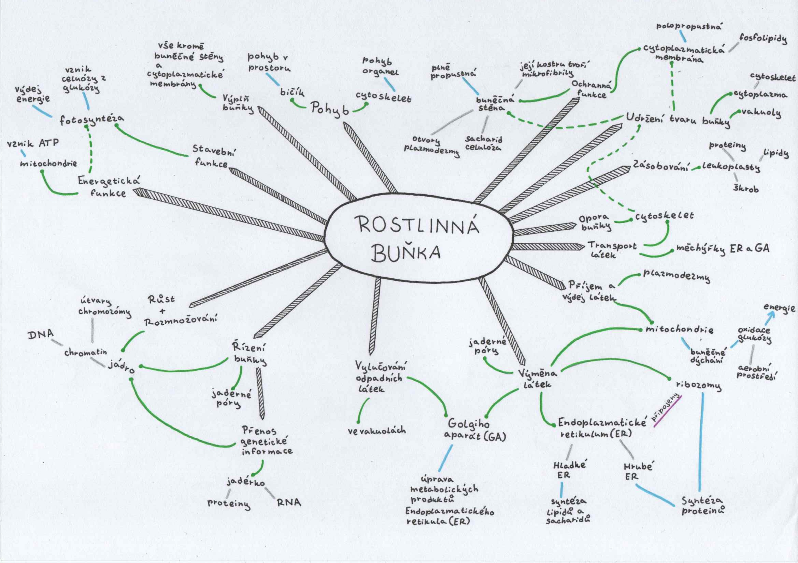
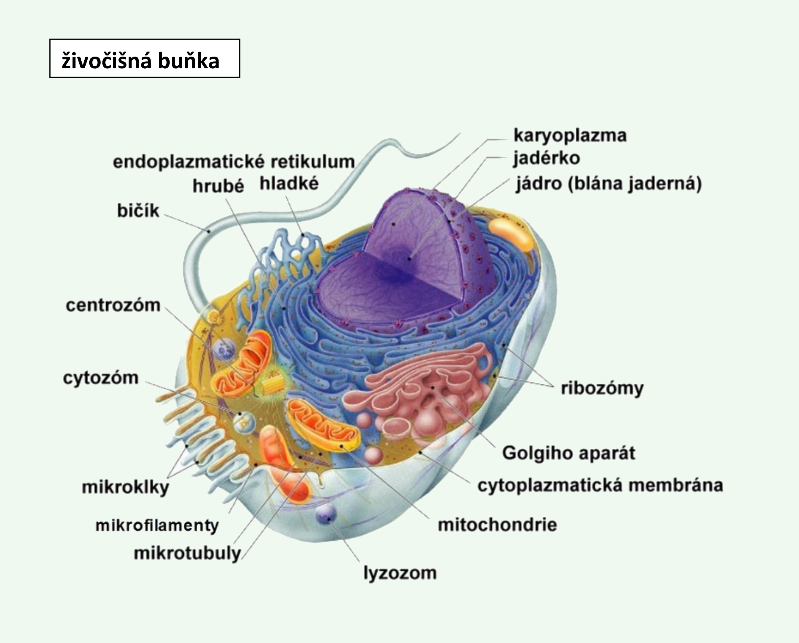
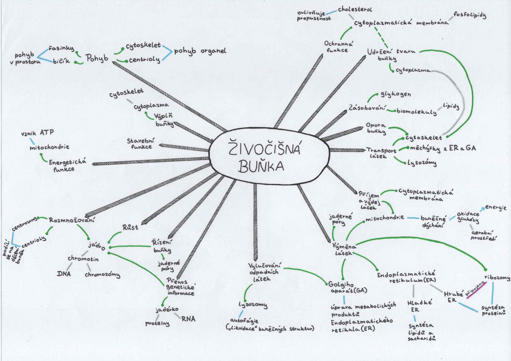
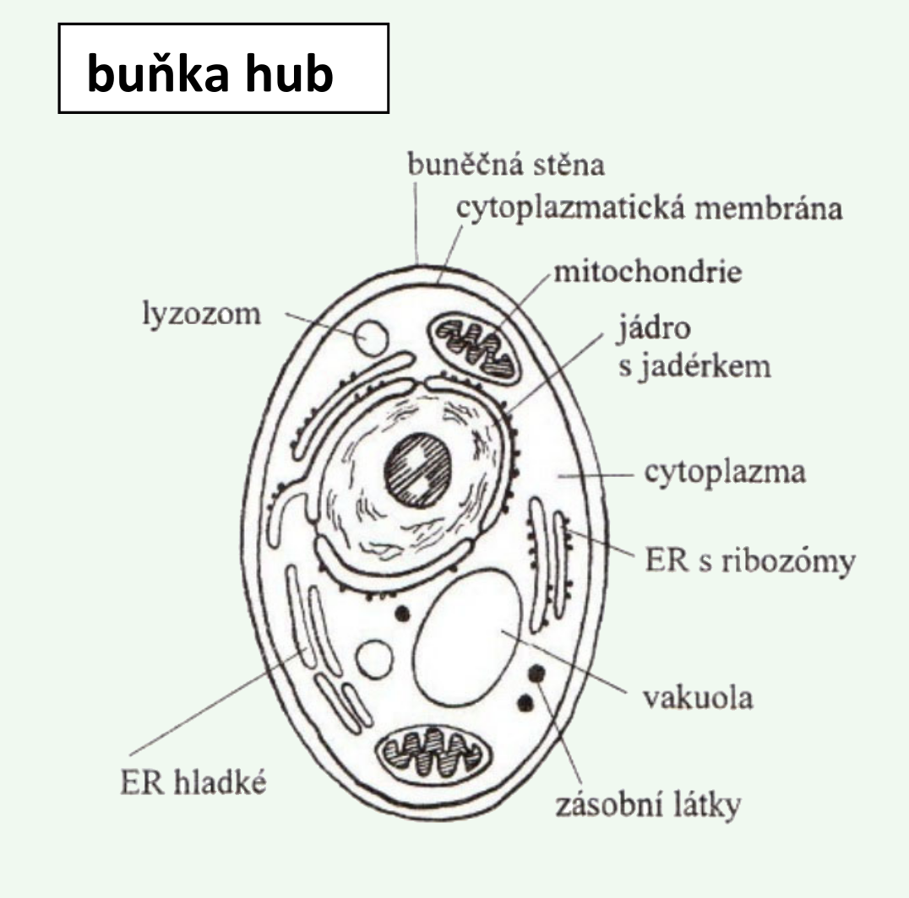

Viry řadíme mezi nebuněčné organismy. Na rozdíl od buněčných organismů nemají vlastní buněčnou strukturu a nejsou schopné samostatně vykonávat všechny životní funkce.

Základem každé virové částice je nukleová kyselina. Může se jednat o RNA nebo DNA a podle tohoto hlediska rozlišujeme RNA viry a DNA viry. Virová částice může obsahovat jednu nebo více molekul dané nukleové kyseliny.
Viry se nerozmnožují dělením jako buňky, ale procesem nazývaným replikace, při kterém vznikají nové kopie jejich složek. Protože nemají vlastní aparát potřebný k rozmnožování, jsou při tomto procesu závislé na hostitelské buňce. Využívají její struktury a enzymatické mechanismy k tvorbě nových virových částic.
Virová genetická informace se může dostat z jedné hostitelské buňky do druhé. Virus může například ovlivnit genetickou informaci hostitele, nebo se jeho vlastní genetický materiál může začlenit do genomu hostitele.
Viry mají parazitický způsob života a jejich množení je možné pouze uvnitř živých buněk. Mohou napadat nejrůznější organismy a u lidí, zvířat i rostlin vyvolávat různá onemocnění..
Stavba viru
Virová částice schopná napadnout hostitelskou buňku se označuje jako virion. Viriony mohou mít různou podobu - některé jsou kulovité, jiné tyčinkovité nebo vláknité. Na jejich povrchu se u některých druhů nacházejí také různé výčnělky.
Základ virionu tvoří genetický materiál, tedy RNA nebo DNA, který je obklopen bílkovinným obalem. Tento obal genetickou informaci chrání a současně pomáhá viru rozpoznat a navázat se na vhodnou hostitelskou buňku. Některé složitější viry mají navíc ještě další vnější obal složený z bílkovin a tuků.
Povrchové bílkoviny jsou pro jednotlivé viry charakteristické. Umožňují například kontakt s hostitelskou buňkou a usnadňují vstup viru do jejího nitra. Zároveň mohou spustit obrannou reakci organismu, při níž imunitní systém začne vytvářet protilátky.
U některých virů není genetický materiál tvořen jediným souvislým úsekem. Je rozdělen do několika částí. Příkladem je virus chřipky, jehož RNA se skládá z osmi samostatných úseků.
Zajímavé je i to, že některé viry mají složitou stavbu – například viry, které napadají bakterie (tzv. bakteriofágy), se skládají z několika částí a mají výrazně složitější tvar než řada jiných virových částic.
Buněčná teorie a role buněk i virů v živých organismech
Podle buněčné teorie je buňka základní stavební a funkční jednotkou každého živého organismu, protože právě buňky zajišťují všechny základní životní procesy a představují nejmenší jednotku života schopnou samostatného fungování.
Všechny živé organismy jsou tvořeny buňkami. Podle počtu těchto buněk, ze kterých je jejich tělo složeno, rozlišujeme dva hlavní typy – jednobuněčné organismy, jejichž celé tělo tvoří jediná samostatná buňka schopná vykonávat všechny nezbytné životní funkce, a mnohobuněčné organismy, které se skládají z velkého množství buněk, jež spolu vzájemně spolupracují, specializují se na různé úkoly a společně tvoří složitě organizovaný celek.
Přestože se organismy mohou výrazně lišit svou podobou i složitostí, všechny jejich buňky mají velmi podobné chemické složení, protože obsahují stejné základní stavební látky, jako jsou bílkoviny, lipidy, sacharidy a nukleové kyseliny.

V buňkách probíhají obdobné chemické reakce, které umožňují uvolňování a přeměnu energie, tvorbu nových látek a udržování vnitřního prostředí, přičemž jejich vnitřní struktura je rovněž do značné míry podobná – většina buněk obsahuje cytoplazmu, buněčnou membránu a genetickou informaci uloženou v DNA.
Nové buňky vznikají výhradně z buněk již existujících, takzvaných buněk mateřských, a to procesem buněčného dělení, díky čemuž je umožněna nepřetržitá kontinuita života a přenos genetické informace z generace na generaci.
Činnost celého živého organismu je pak výsledkem součinnosti jednotlivých buněk, jejich specializovaných funkcí a vzájemné komunikace, přičemž právě spolupráce mezi buňkami zajišťuje, že organismus jako celek může správně fungovat, růst, vyvíjet se a reagovat na podněty z okolního prostředí.
Historie výzkumu buněk
-
1837 – J.E. Purkyně
- Vyslovil pouze základy buněčné teorie.
- Domníval se, že buňky mohou vznikat de novo = sami od sebe (dnes víme, že není úplně pravda)
-
1838-39 – Matthias Schleiden a Theodor Schwann
- Schleiden – botanik – zformuloval část teorie týkající se rostlinných buněk.
- Schwann – zoolog – doplnil buněčnou teorii o živočišné buňky.
- Dohromady vytvořili buněčnou teorii.
-
1857 – Rudolf Virchow
- Potvrdil teorii.
- Přidal také poslední důležitý bod: omnis cellua e cellua (každá buňka pouze z buňky).
- Tzn. každá buňka může vzniknout pouze z buňky, nemůže se tedy stát – jak tvrdil Purkyně –, že buňka vznikne sama od sebe bez nějaké předchozí buňky.
Prokaryotické buňky
Nachází se v jednobuněčných organismech, jako jsou bakterie a archea.
Vnitřní prostor buňky vyplňuje protoplast, tj. cytoplazma obsahující různé struktury, která je na povrchu kryta cytoplazmatickou membránou. V cytoplazmě jsou kromě DNA a ribozomů přítomny plazmidy. Jsou to malé kruhové molekuly DNA, z nichž některé mají schopnost pronikat z jedné buňky do druhé.
Bakteriální buňka je od svého okolí oddělena tuhým obalem – buněčnou stěnou. Buněčná stěna uděluje buňce tvar a mechanicky ji chrání před vlivy vnějšího okolí. Na povrchu mají bičíky (jeden a více, umožňují pohyb) a fimbrie (usnadňují bakteriím přilnutí k různým povrchům).
Za nepříznivých podmínek ztratí bakteriální buňka část vody, cytoplazma se zahustí a na povrchu se vytvoří ochranná vrstva. Buňka se mění na sporu, která se nemnoží. Spory jsou velmi odolné, odolávají teplotám až -190 °C i 100 ˚C. V nepříznivých podmínkách přežívají i několik let.
Eukaryotická buňka
Je evolučně mladší, složitější a zpravidla větší než buňka prokaryotická. Hmota jádra je uspořádána do chromozómů, které obsahují lineární DNA. Buňka obsahuje systém membránových organel, které jsou odvozeny buď od cytoplazmatické membrány, nebo jsou semiautonomní (mitochondrie a plastidy) a vznikly endosymbiózou. Jsou dva způsoby dělení těchto buněk – dělení mitózou a dělení meiózou.
Rozdělujeme tři typy eukaryotických buněk: rostlinná, živočišná, houbová. Základní rozdíl ve stavbě mezi buňkou rostlin a živočichů je ten, že živočišná nemá buněčnou stěnu. Buňka hub se z hlediska stavby v zásadě shoduje s rostlinou. Srovnání těchto typů buněk je v tabulce níže.
Srovnání přítomnosti buněčných struktur eukaryotických a prokaryotických buněk
| Eukaryotické buňky | Prokaryotická buňka | |||
|---|---|---|---|---|
| Buněčná struktura | Rostlinná buňka | Živočišná buňka | Buňka hub | Bakterie |
| Buněčná stěna | Ano | Ne | Ano | Ano |
| Cytoplazmatická membrána | Ano | Ano | Ano | Ano |
| Cytoplazma | Ano | Ano | Ano | Ano |
| Cytoskelet („kostra") | Ano | Ano | Ano | Ne (většinou) |
| Jádro | Ano | Ano | Ano | Rozpuštěnná forma jádra (genetický materiál) |
| Jadérko | Ano | Ano | Ano | Ne |
| ER (endoplazmatické retikulum) | Ano | Ano | Ano | Ne |
| GA (Golgiho aparát) | Ano | Ano | Ano | Ne |
| Vakuoly (ohraničení nějaké látky) | Ano | Ne (vzácné) | Ano | Ne |
| Mitochondrie (energie) | Ano | Ano | Ano | Energetické reakce probíhájí na plazmatické membráně |
| Ribozomy | Ano | Ano | Ano | Ano |
| Plastidy (barviva,tuky....) | Ano | Ne | Ano (různé transformace, ale ne jako u rostlin) | Ne |
| Lyzozómy | Ne | Ano | Ano | Ne |
| Centriola | Ne | Ano | Ne (pouze někdy) | Ne |
| Plasmodesmy | Ano | Ne | Ne | Ne |
Rostlinná buňka
Rostlinné buňky jsou základní stavební a funkční jednotou všech rostlin a také hnědých řas.


Živočišná buňka
Struktura živočišné a rostlinné buňky je v zásadě stejná. Živočišná buňka se liší v tom, že nemá buněčnou stěnu, takže její povrch tvoří pouze cytoplazmatická membrána, která obsahuje navíc cholesterol, ovlivňující propustnost. Také jim chybí plastidy.


Buňka hub
Buňka hub se z hlediska stavby v zásadě shoduje s rostlinnou. Hlavní rozdíl spočívá ve složení buněčné stěny a v absenci plastidů. Zásobními látkami jsou jako v živočišné buňce glykogen a lipidy. Buňky hub jsou heterotrofní.

Na tuto otázku tedy neexistuje jednoznačná odpoveď – zda jsou živé, nebo neživé.
- Buněčná biologie. Online. ELUC. Dostupné z: https://eluc.ikap.cz/lekce/bunecna-biologie. [citováno 2025-05-09].
- Biologie virů a bakterií. Online. ELUC. Dostupné z: https://eluc.ikap.cz/lekce/biologie-viru-a-bakterii. [citováno 2025-05-09].
- ŠÍMA, Petr. Základy biologie pro gymnázia. Praha: Eduko, 2024. ISBN 978-80-88473-20-6.
- Buněčná teorie. Online. In: Wikipedia: the free encyclopedia. San Francisco (CA): Wikimedia Foundation, 1.12.2025. Dostupné z: https://cs.wikipedia.org/wiki/Bun%C4%9B%C4%8Dn%C3%A1_teorie. [cit. 2026-08-21].
- NÁRODNÍ ZDRAVOTNICKÝ INFORMAČNÍ PORTÁL [NZIP]. Viry. Online. NZIP. 2026. Dostupné z: https://www.nzip.cz/rejstrikovy-pojem/984. [cit. 2026-08-21].